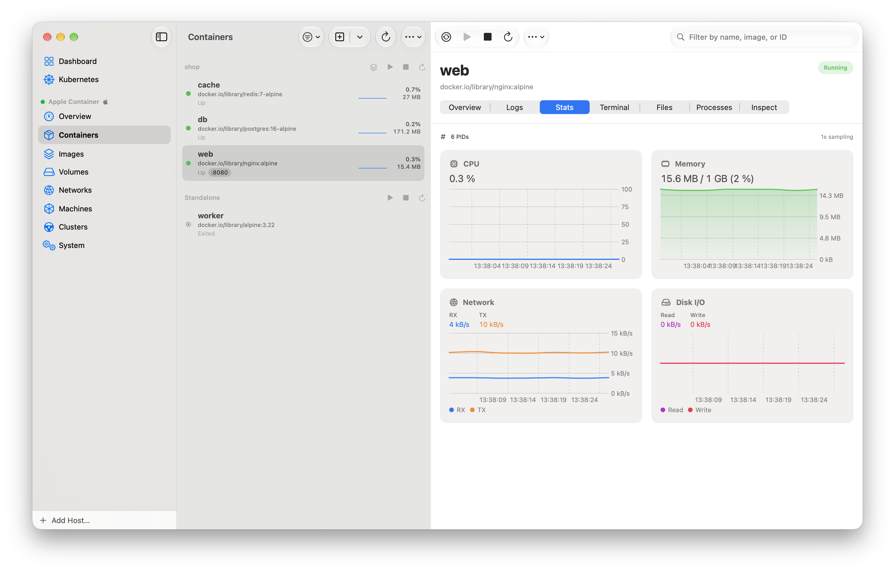

Funkciók
A Gantry minden területe, az app oldalsávjának sorrendjében. A bal oldali oszlop a terület által kiváltott parancsokat mutatja.
Konténerek
Hozzon létre, futtasson, nyisson meg és módosítson konténereket minden gazdagépen.
- container run
- docker exec -it
- docker cp
- docker port
- Egy
docker runbeillesztése - Illesszen be egy
docker run,podman runvagycontainer runparancsot, és a Gantry kitölti az Új konténer űrlapot, a nem használható kapcsolók listájával együtt. Bármely konténert visszamásolhat parancsként, vagy elmentheti receptként. Hogyan működik - Beépített exec-terminál
- Teljes terminálemuláció bármely futó konténerbe, helyibe vagy távoliba – színtémákkal (System, Solarized, Dracula, Nord).
- Fájlböngésző fogd és vidd módszerrel
- Böngéssze a konténer fájlrendszerét, mozgasson fájlokat be és ki, és húzzon be teljes mappákat egyenesen a Finderből – Docker- és apple/container-gazdagépeken egyaránt.
- Megnyitás böngészőben & továbbítás
- Egy kattintás megnyit egy közzétett portot. Az SSH-portok automatikusan a
localhostcímre tunnelezve érkeznek – ha pedig foglalt, a Gantry választ egy szabadot, amelyet módosíthat. - Megosztás az interneten
- Egyetlen kattintással elérhetővé tehet egy közzétett portot egy Cloudflare Tunnelen keresztül. A Gantry telepíti Ön helyett a
cloudflaredeszközt, majd gyors tunnelt (fiók nélkül,*.trycloudflare.comURL-lel) vagy elnevezett tunnelt ad a saját domainjén – ideális fejlesztői előnézethez, webhookhoz, vagy ahhoz, hogy egy MI-ügynök elérjen egy konténert a Macén. - Kulcskarika-titkok a környezetben
- Tárolja a jelszavakat és tokeneket a macOS Kulcskarikában (Beállítások → Titkok), és használja őket környezeti változóként az Új konténer és a Gyorsfuttatás nézetben. Az űrlap a
keychain:NAMEalakot mutatja, sosem az értéket, és a Gantry csak a konténer létrehozásakor olvassa be az értéket. A Compose-export, a receptek és a Másolás parancsként a nevet írják ki, nem az értéket. - Több elem egyszerre
- Jelöljön ki több konténert, image-et, kötetet vagy hálózatot, és indítsa el, állítsa le, indítsa újra vagy távolítsa el őket egy lépésben, folyamatjelzéssel és elemenkénti jelentéssel.
- Valós idejű statisztika
- CPU, memória, hálózat & lemez-I/O élő grafikonokon, másodpercenkénti mintavétellel.
- Konténerek külső meghajtón
- Helyezze át az összes apple/container-adatot egy külső lemezre, tartsa a köteteket egy tetszőleges lemezen, és kapjon egyértelmű figyelmeztetést, ha az a lemez nincs csatlakoztatva. Az útmutató elolvasása

Image-ek és buildek
Töltsön le, buildeljen, vizsgáljon és távolítson el image-eket.
- docker build
- docker pull
- trivy image
- docker system prune
- Image-ek buildelése & letöltése
- Húzzon egy Dockerfile-t az ablakra, és a Gantry élő naplóval buildeli, vagy töltsön le hivatkozás alapján rétegenkénti folyamatjelzéssel. Címkézés, takarítás és a rétegelőzmények megtekintése. Egy jelvény mutatja azokat az image-eket, amelyek a gazdagéptől eltérő CPU-architektúrára készültek.
- Buildelőzmények
- Minden gazdagépnek van egy Buildek szakasza: a buildek a lépéseikkel, a gyorsítótár-találatokkal és a naplóval. A Gantry megőrzi az általa indított buildeket, a build-argumentumok nevével, de az értékük nélkül. Docker-gazdagépeken a
docker buildx historyadatait is beolvassa (buildx 0.23.0 vagy újabb). Az apple/container nem őriz buildelőzményeket, ezért ott a Gantry által indított buildek láthatók. - Image-ek vizsgálata Trivyvel vagy Grype-pal
- Válassza a Sebezhetőségek vizsgálata… parancsot egy image-en. A Gantry az Ön által telepített Trivyt (0.50.0 vagy újabb) vagy Grype-ot (0.74.0 vagy újabb) futtatja, például a Homebrew-ból telepítettet, és a találatokat a kritikustól az ismeretlenig csoportosítja. Az SBOM exportálása CycloneDX vagy – Trivyvel – SPDX formátumot ír. Működik az apple/containeren, a helyi Dockeren és az SSH-n elért Dockeren, ahol a Gantry egy címkézett image registryben lévő példányát vizsgálja.
- Privát registryk
- A letöltések a már elvégzett
docker loginbejelentkezést használják – a Gantry a~/.docker/config.jsonfájlból, a helperekből és a Kulcskarikából olvassa ki a hitelesítő adatokat, létrehozáskor, Gyorsfuttatáskor és Compose-nál egyaránt. - Hely felszabadítása
- Egy panel mutatja, mi foglalja a helyet – gazdátlan image-ek, leállított konténerek, nem használt kötetek, build-gyorsítótár – méretekkel együtt, és egyenként vagy egyszerre takarítja őket. Az apple/containeren a Lemez TRIM-elését is elvégzi.
Compose
Futtasson egy docker-compose.yml fájlt Dockeren vagy apple/containeren, és készítsen egyet futó konténerekből.
- docker compose up -d
- docker compose down
- docker compose logs -f
- Compose minden gazdagépen
- A konténerek Compose-projekt szerint csoportosulnak. Indítson Compose-fájlt bármely gazdagépen – helyi Dockeren, SSH-n vagy apple/containeren – a beépített YAML-szerkesztővel; a futtató motoronként alkalmazkodik.
- Exportálás Compose-ként
- Válassza az Exportálás Compose-ként… parancsot egy vagy több konténeren, és kap egy
docker-compose.ymlfájlt a portokkal, csatolásokkal, hálózatokkal, újraindítási szabállyal, állapotellenőrzéssel, korlátokkal és egyebekkel. A titoknak látszó értékekből${NAME}lesz, hacsak nem foglalja bele őket. Az apple/container-gazdagépeken a Gantry figyelmeztet azokra a kapcsolókra, amelyeket a Compose nem tud kifejezni. Hogyan működik
Kubernetes
Böngéssze a kubeconfig összes környezetét, vagy hozzon létre klasztert az apple/containerrel.
- kubectl get pods -A
- kubectl logs -f
- kubectl port-forward
- container cluster
- Kubernetes-böngésző
- Böngéssze bármely kubeconfig-környezet podjait, deploymentjeit, StatefulSetjeit, DaemonSetjeit, szolgáltatásait, ingresseit, ConfigMapjeit, Secretjeit, csomópontjait és eseményeit. Kövesse a podnaplókat, nyisson shellt, továbbítson portot, skálázzon, indítson újra rolloutot, és alkalmazzon YAML-t. A Gantry közvetlenül a Kubernetes API-val kommunikál, így a
container cluster createparanccsal létrehozott klaszter rögtön böngészhető, semmi mást nem kell telepíteni:kubectlsem kell. - Kubernetes-klaszterek
- Hozzon létre Kubernetes-klasztert a
container clusterparanccsal: méretezze külön a vezérlősíkot és a workereket, válassza ki a CNI-t, és nézze meg a csomópontokat, a Kubernetes-verziót és a kubeconfig-környezetet. A klaszter csomópontjai védve vannak a véletlen leállítás és törlés ellen. Bővebben

Gazdagépek és flotta
Ez a Mac, az SSH-n elért Docker-gazdagépek és az apple/container egyetlen irányítópulton.
- docker -H ssh://user@host
- docker context use
- docker stats
- Egy irányítópult minden gazdagéphez
- Helyi démon, SSH-flotta és apple/container egy képernyőn – élő CPU- és memória-minigrafikonok, konténerállapot-bontás és állapotproblémák, amelyekről egyenesen a hibás konténerhez ugorhat.
- Távoli gazdagépek SSH-n
- Pontosan úgy tunnelez, mint a
docker -H ssh://, adial-stdiosegítségével – ProxyJump ugrógépek, többkulcsos hitelesítés, automatikus újracsatlakozás. A szerverre semmit sem kell telepíteni, a titkok a Kulcskarikában vannak. Importálás egy kattintással a~/.ssh/configfájlból és adocker context lsparancsból. - Erőforrás-használat minden gazdagépen
- Egyetlen rendezhető táblázat minden csatlakoztatott gazdagép futó konténereiről: gazdagép, név, image, CPU, memória, hálózati I/O, lemez-I/O és futási idő. Szűrhet név, image vagy gazdagép szerint, vagy megjeleníthet egyetlen gazdagépet. Egy sorra duplán kattintva megnyílik a konténer. A táblázat azokat a mintákat használja, amelyeket a Gantry amúgy is 5 másodpercenként gyűjt, így nem nyit új statisztikai adatfolyamokat. Megnyitható az oldalsávról, a ⌘K billentyűkkel vagy a
gantry://open/usagehivatkozással.


Naplók és hibák
Olvassa, keresse és exportálja a naplókat. Derítse ki az okot, ha egy konténer hibával leáll.
- docker logs -f
- container logs
- docker events
- Élő naplók
- Valós idejű követés, regex vagy szó szerinti ⌘F keresés, szintszűrő (Error→Trace), ANSI-színek, 50 ezer soros puffer – és egy teljes Compose-projekt összefésült stack-naplói.
- Naplók exportálása
- A Naplók exportálása… (⇧⌘E) a látható sorokat a szintszűrővel, a kereséssel és az időtartománnyal együtt
.logvagy.txtfájlba menti. A Látható sorok másolása vágólapra másolja őket. Docker-gazdagépeken időbélyegeket adhat hozzá, és csak a legutóbbi időszakot jelenítheti meg, 5 perctől egy napig. - Hibaértesítések
- Natív értesítés, ha bármely gazdagépen egy konténer összeomlik, kifogy a memóriából vagy nem egészségessé válik. Kattintson rá, és egyenesen a konténerhez ugrik – a saját leállításai nem váltanak ki értesítést.
- Hiba magyarázata az Apple Intelligence-szel
- Válassza a Hiba magyarázata… parancsot egy összeomlott konténeren vagy egy sikertelen műveleten. A Gantry a friss naplókat és adatokat a környezeti változók értékei és a titoknak látszó szövegek nélkül elküldi az eszközön futó modellnek, majd megmutatja a valószínű okot, a bizonyítékokat és a következő lépéseket. A hosszú naplók a Private Cloud Compute-ba is kerülhetnek (macOS 27). A panel pontosan megmutatja, mit küldött el.
- Képernyőképek a Hiba magyarázatában
- Húzzon be, illesszen be vagy adjon hozzá legfeljebb 3 képet a Hiba magyarázatában, például egy hibaoldal képernyőképét. A képek ezen a Macen maradnak: csak az eszközön futó modell olvassa őket (macOS 27), a Private Cloud Compute soha.

macOS
A menüsor, az értesítések, a Spotlight, a Parancsok és a billentyűzet.
- ⌘K
- ⌥⌘P
- ⇧⌘E
- A macOS része
- Értesítések Újraindítás, Naplók megtekintése és Másolás promptként műveletekkel. A Spotlight megtalálja a konténereket, a Compose-projekteket és a gazdagépeket. Siri- és Parancsok-műveletek, flottaállapot-widget, vezérlők a Vezérlőközpontban az apple/container szolgáltatásaihoz vagy egy kedvenc konténerhez, valamint
gantry://hivatkozások szkriptekhez. - Folyamatjelzés a menüsorban
- A menüsor panelje minden futó letöltést, buildet és Compose-műveletet folyamatjelzővel mutat, a kész rétegekkel vagy szolgáltatásokkal, a bájtokkal, az idővel és egy Mégse gombbal. A menüsor ikonja mutatja, hány művelet fut. Minden Compose-projekthez tartozik Képek letöltése és Compose down; a Compose down megtartja a köteteket és az image-eket.
- Parancspaletta
- Nyomja meg a ⌘K billentyűkombinációt, és kezdjen gépelni. Egyetlen keresés lefedi a konténereket, a Compose-projekteket, az image-eket, a köteteket, a hálózatokat, a gépeket, a klasztereket és a gazdagépeket, olyan műveletekkel, mint az Indítás, a Naplók megjelenítése és a Shell megnyitása.
- Touch ID a romboló műveletekhez
- Ha bekapcsolja, a Gantry Touch ID-t – vagy a bejelentkezési jelszavát – kéri, mielőtt eltávolít egy konténert vagy töröl egy gazdagépet. A titkok eleve a Kulcskarikában vannak.
- Terminál-témák
- Adjon a beépített shellnek System, Solarized Dark, Dracula vagy Nord témát – teljes előtér-, háttér- és 16 színű ANSI-paletta, azonnal alkalmazva.

Natív macOS GUI az Apple containerhez
Az Apple container eszköze könnyű virtuális gépekként futtatja a Linux-konténereket Apple chipen, de csak parancssori eszközként érhető el. A Gantry ehhez az asztali app: ami a Docker Desktop a Dockernek, az a Gantry a container eszköznek. A container CLI minden verzióját támogatja az 1.0-tól az ajánlott 1.7.1-ig, és minden funkciót csak akkor kapcsol be, ha a telepített CLI támogatja.
- container system start
- container machine
- container builder start
- container registry login
- Konténerek, naplók, statisztika és exec
- Létrehozás, indítás, leállítás, kilövés és takarítás; élő naplók, statisztika, exec-terminál,
topés tar-export ugyanazon a felületen, mint a Docker-gazdagépei. - Kubernetes-klaszterek
- Hozzon létre Kubernetes-klasztert a
container clusterparanccsal: méretezze külön a vezérlősíkot és a workereket, válassza ki a CNI-t, és nézze meg a csomópontokat, a Kubernetes-verziót és a kubeconfig-környezetet. A klaszter csomópontjai védve vannak a véletlen leállítás és törlés ellen. Bővebben - Helyi image-ek a klaszterben
- A CLI 1.7-ben kapcsolja be a Helyi image-ek használata beállítást (
--shared-image-store), és a podok registry nélkül futtatják az Ön által buildelt vagy letöltött image-eket. A CLI 1.5-ben és 1.6-ban kattintson jobb gombbal egy image-re, és válassza a Betöltés a klaszterbe parancsot. - Egyértelmű tippek hibás telepítésnél
- Ha a klaszterszolgáltatások nem válaszolnak, a Gantry megmondja, miért. Ha a Homebrew-buildből hiányoznak a klaszterszolgáltatások, a Gantry az aláírt telepítő hivatkozását adja; minden más esetben a Szolgáltatások újraindítása gombot.
- Konténergépek a VS Code-ban
- Hozzon létre, indítson és állítson le
container machineLinux-környezeteket, állítsa be a CPU-kat és a memóriát, nyisson shellt, vagy nyissa meg a gépet a VS Code-ban Remote-SSH-n keresztül. - Beágyazott virtualizáció és egyéni kernelek
- Indítson gépet beágyazott virtualizációval (M3 vagy újabb) vagy saját kernellel. Indítson konténereket egyéni kernelről, további rendszerindítási argumentumokkal.
- Compose az Apple containeren
- Az apple/containernek nincs
composeparancsa. A Gantry futtatja adocker-compose.ymlfájlt: buildel, létrehozza a hálózatot és a köteteket, majddepends_onsorrendben elindítja a szolgáltatásokat. A szolgáltatásnevek hálózati DNS-aliasokon keresztül oldódnak fel. - Hálózati DNS-aliasok
- Konténeraliasok, altartomány-aliasok, például
.gateway, és rövid nevek, ha be van állítva alapértelmezett DNS-tartomány. Minden konténer routolható IP-címet ésname.domaingazdagépnevet kap. - Az image-builder kezelése
- Megtekintheti a builder állapotát, image-ét, CPU-it, memóriáját és IP-címét. Indítsa CPU-, memória- és DNS-beállításokkal, állítsa le vagy törölje. Ha a builder image-e elavult, a Gantry felajánlja az újbóli létrehozását.
- Registry-bejelentkezések
container registrybejelentkezések listázása, hozzáadása és eltávolítása. A jelszó csak stdinen jut el a CLI-hez, és a Gantry nem tart meg róla másolatot.- Kerneltelepítés
- Telepítse az ajánlott kernelt, egy kernelfájlt vagy egy tar-archívumot, élő folyamatjelzéssel. A Gantry figyelmeztet, ha nincs telepítve alapértelmezett kernel.
- Szolgáltatások és szolgáltatásnaplók
- Indítsa, állítsa le és indítsa újra a
containerszolgáltatásokat, vesse össze a kliens- és a szerververziót, és streamelje a szolgáltatásnaplókat szint, szolgáltatás és szöveg szerint szűrve. - Rendszertulajdonság-szerkesztő
- Szerkessze a
containerrendszertulajdonságait aconfig.tomlfájlban. A Gantry megjelöli az újraindítást igénylő módosításokat, és újraindítja Ön helyett a szolgáltatásokat. A CLI 1.7-ben a[container.dns]alapértékeit is szerkeszti: névszerverek, keresési tartományok és beállítások. - Commit és Lemez TRIM-elése
- Commitoljon egy konténert image-be (
container commit), és szabadítson fel lemezterületet a Lemez TRIM-elése paranccsal (container clean), amely a Hely felszabadítása panelen is elérhető. - Fájlböngésző: feltöltés és letöltés
- Böngéssze a konténer fájljait, töltse le őket vagy húzza ki a Finderbe (
container copy), és húzzon be fájlokat vagy teljes mappákat. - Gyorsfuttatás és Finder
- Válasszon image-et, osszon meg egy mappát, rendelje hozzá a portokat, válasszon tartományt, majd indítsa. Kattintson jobb gombbal egy Compose-fájlra a Finderben, és nyissa meg a Gantryvel.
=jelet tartalmazó címkék- A
containerCLI elutasítja a=jelet tartalmazó címkeértékeket. A Gantry létrehozáskor kódolja, olvasáskor visszafejti őket, így egya=bérték változatlan marad. - Egy flotta, két futtatókörnyezet
- Az apple/container-gazdagépek egy irányítópulton jelennek meg a helyi Docker- és SSH-gazdagépek mellett, ugyanazokkal a minigrafikonokkal, állapotjelzéssel és hibaértesítésekkel.
- MCP-eszközök ügynököknek
- A beépített MCP-szerver ugyanazt a hatókört adja az ügynököknek: konténerek, gépek, klaszterek és
apple_*rendszereszközök szolgáltatásokhoz, builderhez, registrykhez, tulajdonságokhoz, naplókhoz és kernelekhez.
Ügynökök
A beépített MCP-szerver és az App Intents minden gazdagépet – az SSH-gazdagépeket is – elérhetővé tesz a Claude, a Parancsok, a Siri és a szkriptek számára, ugyanazzal a hatókörrel, mint a GUI: konténerek létrehozása és kezelése, image-ek buildelése és letöltése, kötetek és hálózatok, Compose up, apple/container-gépek és Kubernetes-klaszterek, apple_* rendszereszközök szolgáltatásokhoz, builderhez, registrykhez és kernelekhez, sőt egy port megosztása Cloudflare Tunnelen keresztül.
- claude mcp add gantry
$ claude mcp add gantry -- \
/Applications/Gantry.app/Contents/Resources/gantry-mcp
✓ MCP-szerver hozzáadva gantry
- Másolás promptként
- Nyomja meg a ⌥⌘P billentyűket bármely konténeren, és a Gantry beilleszthető hibakereső promptot tesz a vágólapra – a gazdagépet és elérésének módját, az MCP
host_idazonosítót és az eszközöket, a konténer teljes állapotát, valamint a tünethez illő feladatot. - MCP-eszközök ügynököknek
- A beépített MCP-szerver ugyanazt a hatókört adja az ügynököknek: konténerek, gépek, klaszterek és
apple_*rendszereszközök szolgáltatásokhoz, builderhez, registrykhez, tulajdonságokhoz, naplókhoz és kernelekhez.
Felépítés
A Gantry a Docker Engine API-val és az Apple container CLI-jével kommunikál. Saját szolgáltatást nem futtat.
- 100%-ban natív SwiftUI
- Natív SwiftUI, nem Electron. Az app a macOS vezérlőit, betűtípusát és ablakait használja.
- Swift 6
- Modern, párhuzamosság szempontjából biztonságos kódbázis a legújabb eszközláncon.
- Közvetlen Engine API
- Docker a Unix socketen át, Docker CLI nélkül. Az apple/container a saját
containerCLI-jén keresztül. - Automatikus frissítés
- Az EdDSA-val aláírt Sparkle-appcast naprakészen tartja az appot, észrevétlenül.
Kérdések
Melyik a legjobb GUI az Apple containerhez?
A Gantry ingyenes, nyílt forráskódú natív macOS GUI, amely az Apple container eszközéhez (apple/container) készült. Lefedi a konténerek életciklusát, a naplókat, a statisztikát és az exec-terminált, valamint a CLI azon részeit is, amelyekig más GUI-k nem jutnak el: Kubernetes-klaszterek (container cluster), konténergépek, image-builder, registry-bejelentkezések, kernelek, szolgáltatásnaplók és rendszertulajdonságok. A CLI 1.0–1.7.1 verzióit támogatja, és minden funkciót csak akkor kapcsol be, ha a telepített CLI támogatja. Lásd az apple/container-útmutatót.
Mi az Apple container (apple/container)?
Az apple/container az Apple nyílt forráskódú eszköze Linux-konténerek futtatására Macen. Minden konténer saját, könnyű virtuális gépen fut, amely az Apple Virtualization keretrendszerére épül. Apple chipes Mac kell hozzá, és container nevű parancssori eszközként érkezik, asztali app nélkül. Ezt az asztali appot adja hozzá a Gantry.
Támogatja a Gantry a container clustert és a Kubernetest?
Igen. Az apple/container-gazdagépen a Gantry a container cluster paranccsal hoz létre és töröl Kubernetes-klasztereket (CLI 1.6.1 és 1.7; a CLI 1.5.0–1.6.0 a container k8s parancsot használja). Ön választja ki a nevet, a workereket, a vezérlősík és a workerek CPU-it és memóriáját (1.7), a csomópont-image-et, a CNI-t, valamint azt, hogy a csomópontok a helyi image-eket használják-e (1.7). A Gantry megmutatja a csomópontokat, kiírja a kubeconfigot, és megnyitja a klasztert a saját Kubernetes-böngészőjében. Lásd: Kubernetes az apple/containeren.
Használható a docker compose az Apple containerrel?
Igen. Az apple/containernek nincs compose parancsa, ezért a Gantry a container CLI-n keresztül végzi az orkesztrációt: buildeli a build: szolgáltatásokat, létrehozza a projekt hálózatát és a névvel ellátott köteteket, majd a depends_on sorrendjében elindítja a szolgáltatásokat a szabványos Compose-címkékkel. A szolgáltatásnevek hálózati DNS-aliasokon keresztül oldódnak fel. Egy docker-compose.yml fájlt a Finderből, a Fájl menüből vagy az ablakra húzva nyithat meg.
Hogyan nyitható meg egy konténergép a VS Code-ban?
Indítsa el a gépet a Gantryben, és kattintson a Megnyitás a VS Code-ban gombra. A Gantry Remote-SSH-n keresztül nyitja meg a gépet a VS Code-ban, ahogy az Apple container-machine-vscode példájában. A gép image-ében futnia kell az sshd-nek, és telepítve kell lennie a VS Code-nak a Remote-SSH bővítménnyel.
Mely apple/container-verziókat támogatja a Gantry?
A Gantryhez a container CLI 1.0-s vagy újabb verziója kell, az ajánlott verzió az 1.7.1. Kiolvassa a telepített verziót, és csak azokat a funkciókat mutatja, amelyeket az a verzió támogat, például a workerméreteket és a közös image-tárat (1.7), a commitot (1.6) és a Lemez TRIM-elését (1.4). Ha a CLI hiányzik vagy régi, a Gantry irányított telepítést kínál.
Tud a Gantry Kubernetes-klasztert böngészni?
Igen. A Kubernetes szakasz minden kubeconfig-környezethez listázza a podokat, a deploymenteket, a StatefulSeteket, a DaemonSeteket, a szolgáltatásokat, az ingresseket, a ConfigMapeket, a Secreteket, a csomópontokat és az eseményeket. Van benne podnapló, shell a podban, porttovábbítás, skálázás, rollout-újraindítás, törlés és YAML alkalmazása. A Gantry közvetlenül a Kubernetes API-val kommunikál, így nincs szükség a kubectl eszközre. Lásd: Kubernetes futtatása Macen.
Mit küld el a Hiba magyarázata az Apple Intelligence-nek?
A friss naplókat és a konténer adatait, a környezeti változók értékei és a titoknak látszó szövegek nélkül. A kis kérések az eszközön futó modellen futnak. Ha be van kapcsolva a hosszú naplókra vonatkozó beállítás (macOS 27), a hosszú naplók a Private Cloud Compute-ba kerülnek. A panel megmutatja, mit küldött el a Gantry. A javasolt parancs a Terminálban nyílik meg, de csak akkor fut le, ha megnyomja a Return billentyűt. Apple Intelligence nélkül a Gantry egy promptot kínál, amelyet egy másik MI-asszisztensbe másolhat.
Beilleszthetek egy docker run parancsot a Gantrybe?
Igen. Az Új konténer lapon válassza a Parancs beillesztése… lehetőséget. A Gantry beolvassa a docker run, a docker create, a podman run és a container run parancsot, kitölti az űrlapot, és indoklással felsorolja azokat a kapcsolókat, amelyeket nem tud használni. Lásd: Konténer létrehozása docker run parancsból.
Kezelhető a Gantryvel az apple/container buildere, registryjei és kernele?
Igen. Az apple/container-gazdagép Rendszer szakasza CPU-, memória- és DNS-beállításokkal indítja, leállítja és törli az image-buildert; listázza, hozzáadja és eltávolítja a registry-bejelentkezéseket (a jelszó csak stdinen jut el a CLI-hez); telepíti az ajánlott kernelt, egy kernelfájlt vagy egy tar-archívumot; streameli a szolgáltatásnaplókat, és szerkeszti a rendszertulajdonságokat a config.toml fájlban.
Alternatívája a Gantry a Docker Desktopnak, az OrbStacknek vagy a Podman Desktopnak?
GUI-ként igen. A Gantry ingyenes natív macOS-app konténerek, image-ek, kötetek, hálózatok, naplók és statisztikák kezelésére. Kliens, nem motor: a már futó Docker-démont (Docker Desktop, OrbStack, Colima) vagy az Apple container eszközét használja, és többgazdagépes nézetet, SSH-gazdagépeket és MCP-szervert ad hozzá. Lásd az összevetést.
Ingyenes a Gantry?
Igen. A Gantry ingyenes és nyílt forráskódú, MIT-licenc alatt. Nincs előfizetés, nincs fiók, és nincs korlátja a gazdagépek vagy a konténerek számának.
Mi kell a Gantry futtatásához?
macOS 26 vagy újabb Apple chippel vagy Intellel, továbbá egy Docker-démon (Docker Desktop, OrbStack, Colima vagy hasonló) vagy az Apple container eszköze. Maga az apple/container Apple chipet igényel, így Intel-alapú Macen a Gantry csak Docker-gazdagépeket kezel.
Működik a Gantry az OrbStackkel, a Colimával és a Docker Desktoppal?
Igen. A Gantry közvetlenül a Docker Engine API-val kommunikál a Unix socketen keresztül, így minden démonnal működik, amely ezt elérhetővé teszi, köztük az OrbStackkel, a Colimával és a Docker Desktoppal.
Kezelhetők a Gantryvel távoli Docker-gazdagépek?
Igen. A Gantry SSH-n keresztül csatlakozik a távoli démonokhoz, ugyanúgy, mint a docker -H ssh://, ProxyJump ugrógépekkel, többkulcsos hitelesítéssel és automatikus újracsatlakozással. A szerverre semmit sem kell telepíteni, a titkok pedig a macOS Kulcskarikájában vannak.
Értesít a Gantry, ha egy konténer meghibásodik?
Igen. A Gantry natív macOS-értesítést küld, ha bármely gazdagépen – helyin, SSH-n vagy apple/containeren – egy konténer összeomlik, kifogy a memóriából, vagy nem felel meg az állapotellenőrzésnek. Az értesítésre kattintva a konténerhez ugorhat. A Gantryből indított leállítások és újraindítások nem váltanak ki értesítést, és a funkció a Beállításokban kikapcsolható.
Tud a Gantry privát registryből image-et letölteni?
Igen. Docker-gazdagépeken a Gantry a ~/.docker/config.json fájlból olvassa ki a hitelesítő adatokat (ugyanaz a docker login, amelyet már lefuttatott), beleértve a beágyazott hitelesítést, a credential helpereket és a macOS Kulcskarikáját. Az apple/container-gazdagépeken a container registry bejelentkezéseket kezeli.
Elérhetővé tehető a Gantryvel egy helyi konténer az internetről?
Igen. Egy közzétett port egyetlen kattintással megosztható egy Cloudflare Tunnelen keresztül. A Gantry szükség esetén telepíti a cloudflared eszközt, majd elindít egy gyors tunnelt (Cloudflare-fiók nélkül, ideiglenes trycloudflare.com URL-lel) vagy egy elnevezett tunnelt a saját gazdagépnevén. A nyilvános URL a port alatt jelenik meg, megnyitás, másolás és leállítás vezérlőkkel.
Electron-app a Gantry?
Nem. A Gantry SwiftUI-jal és Swift 6-tal készült natív app. A felület 28 nyelven érhető el: angolul, egyszerűsített kínaiul és 26 európai nyelven, például szerbül cirill és latin betűkkel. A macOS rendszernyelvét követi.
Hogyan telepíthető a Gantry?
Futtassa a brew install --cask getgantry/tap/gantry parancsot, vagy töltse le a legújabb kiadást a GitHubról, és húzza a Gantry.app fájlt az Alkalmazások mappába.
Vezérelhetik MI-ügynökök a Gantryt?
Igen. A Gantry beépített MCP-szervert és macOS App Intents-támogatást kínál, így a Claude, a Parancsok, a Siri és a szkriptek ugyanazt érik el minden gazdagépen, az SSH-gazdagépeket is beleértve, mint a GUI: konténerek, image-ek, kötetek, hálózatok, Compose, apple/container-gépek, Kubernetes-klaszterek, apple_* rendszereszközök (szolgáltatások, builder, registryk, tulajdonságok, naplók, kernel) és portmegosztás. macOS 26-on és újabb rendszeren a Hiba magyarázata… az Apple Intelligence-től is megkérdezi, miért hibásodott meg egy konténer. Az MCP-szerver hozzáadása: claude mcp add gantry -- /Applications/Gantry.app/Contents/Resources/gantry-mcp.